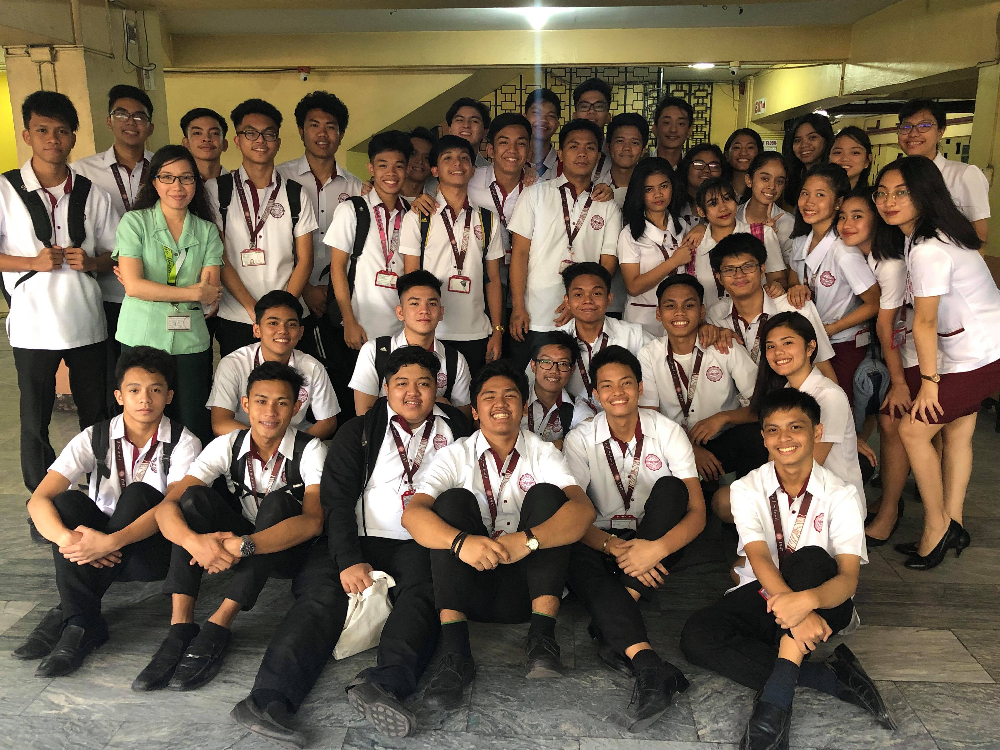
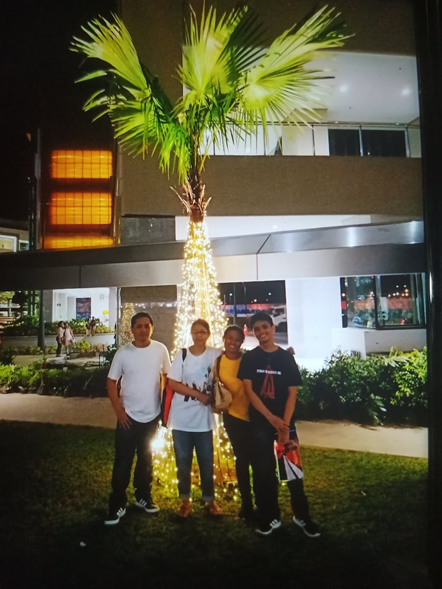
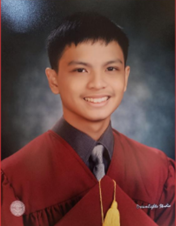
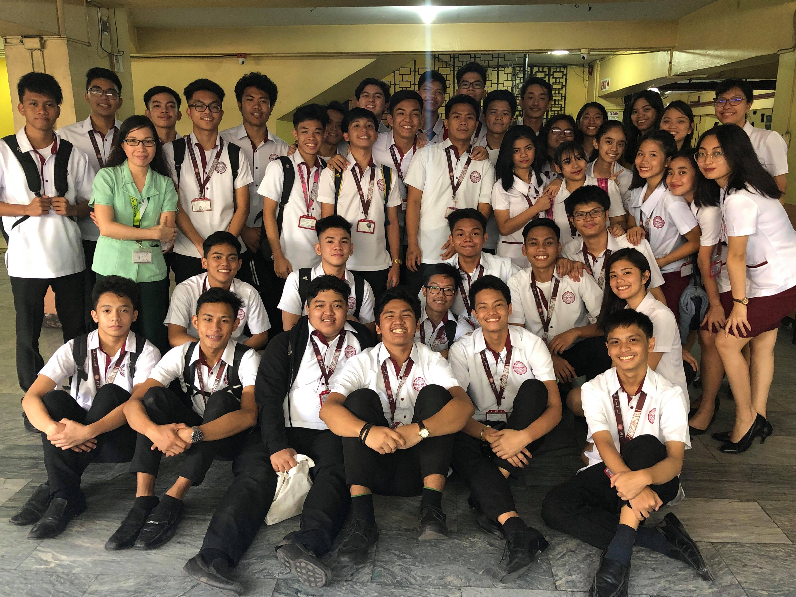
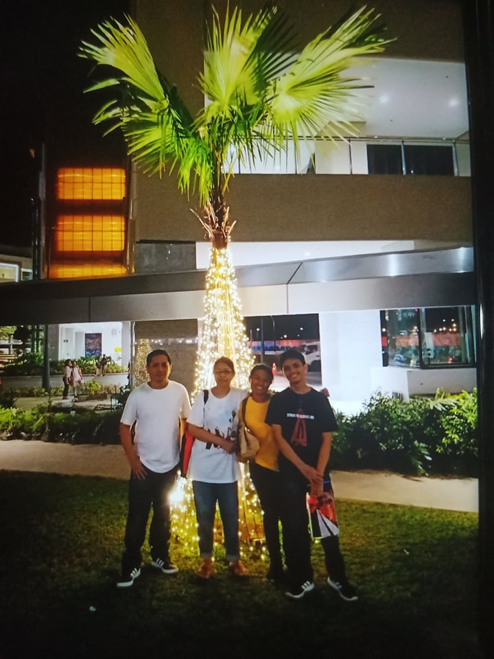
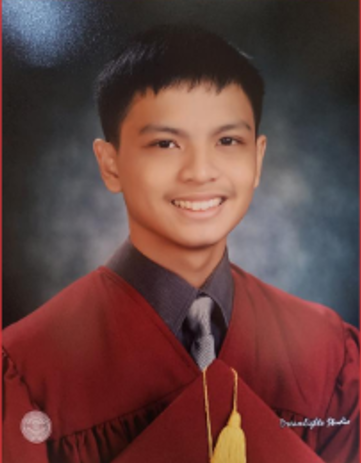

The Three Stages of Life
1Rafael was born, and was raised in Taal, Pulilan, Bulacan. 2His birhtday is on June 14, 2002. 3His mother is Emilia M. Abacan, and his father is Ramon P. Abacan. 4He has a sister named Franchesca M. Abacan. 5As a child Rafael dream of becoming a person who works in front of a computer. 6He studied at Saint Bernadette Divine Academy during his elementary days. 7His hobbies are playing games, playing badminton, and walking outside. 8During his Grade 5, he participated in a tournament for badminton which is called bulprisa where different school compete with each other. 9Rafael lost almost every match except when he was matched with a Grade 2 student. 10Still, winning one match give him a place in the tournament, not the best one but it's very satisfying when he heard it announce in his school. 11His placing in the tournament was somewhere around 1000 - 3000. 12Defeat taught him that there is a lot of people that are better than him. 13Rafael's classmates count on school have not reach two digits when he was Grade 4 - 6. 14All of the students in his school know each other. 15There was a day in school where the students have to sleep outside and do some team building activities. 16It was the first time he slept away from his house and could not sleep. 17He learned in that event that there are people who will help you, and there are people who will make you sad (A cellphone was stolen during that time, even if students are not allowed to go to their bags). 18Some of the events happened during his childhood days are when he was chased by a goat, and when his head was stuck on something. 19He became aware that life is not all fun but it is beautiful. 20These memories are precious, and is hard to forget.


1Rafael entered Espiritu Santo Parochial School for his High School. 2It is a Catholic School which is located in Tayuman street in Manila. 3They moved to Manila because his sister entered college at University of Santo Tomas. 4It was hard for Rafael to adjust since during the elementary days, he only had 8 classmates and 1 section, and now he have 39 classmates and 6-8 sections. 5Rafael joined an art club but got discourage by a single comment from a teacher. 6Back then, he did not know how to think flexible. 7Highschool is not all sad memories. 8Every day was fun since there are people who can be called friends. 9Projects may be tough, but it was still fun. 10There are a lot of events in highschool like foundation day, competitions between each sections, and promenade. 11Rafael in senior high experienced a lot of things. 12He enrolled for ICT strand but not a lot of students enrolled in it, 13He became a STEM student. 14There is an event called senior high school week where seniors shows what they learned in the class. 15It's like foundation day where different grades play, experience what seniors are doing. 16In that event, Rafael learned to be more cooperative, and a little of leadership. 17Since there were a lot of things needed to be prepared. 18In this time, there can be a lot of stress. 19To avoid stress, He watch anime, play games, and go somewhere with friends. 20The only thing he regrets is that, there are no graduation happened due to pandemic, and his parents did not experience to go up in the stage.
 





1Rafael studied at University of the East with the course of Information Technology. 2Rafael college time had been rough since it started as online class. 3At the beginning, there was a need to adjust himself. 4While in the need of adjusting, there is a programming subject. 5Rafael have not program anything on his own. 6He had a hard time especially when patterns are involved. 7With the help of his friends, he managed to pass the activities. 8College is different from high school. 9College is harder just from the activities alone. 10But, Rafael thinks that this is a practice for the future. 11He must persevere because the life of a person with job may be harder. 12College is a training for the future. 13He believes in that, and face different hardship. 14So far, he learned how to use Java, Python, and C#. 15Rafael wants to gain more experience in coding because his dream is to become a game developer. 16He is in IT course because of some problem but he did not let this problem get him depress. 17He plan to pursue his dreams after college. 18To achieve that, he will work harder. 19At this time, Rafael is also studying how to draw again. 20To achieve your dreams, you must work hard.